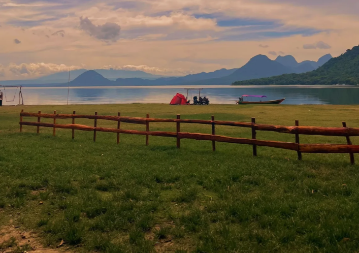
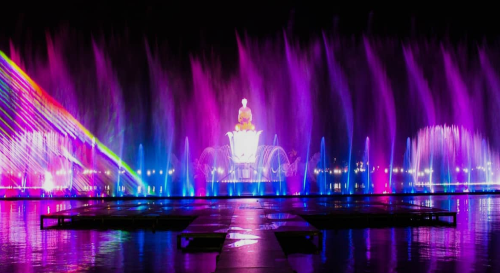
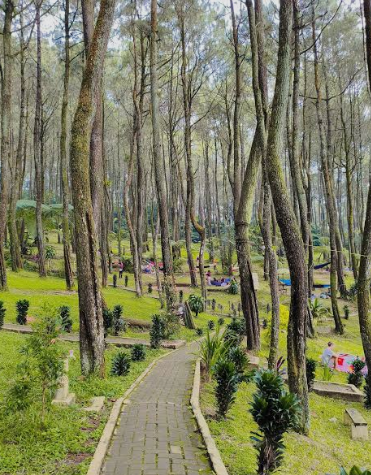
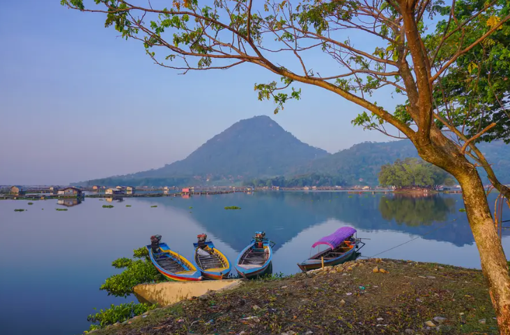

Parang Gombong
Padang rumput di tepi waduk dengan latar perbukitan. Cocok untuk berkemah dan menikmati langit sore.
Dari air mancur di pusat kota sampai tepi waduk dan hutan pinus, Purwakarta punya banyak tempat untuk dikunjungi.

Wisata Purwakarta adalah halaman informasi sederhana yang memperkenalkan beragam destinasi menarik di Kabupaten Purwakarta, mulai dari wisata alam, kawasan waduk, hingga tempat rekreasi yang cocok dikunjungi bersama keluarga maupun teman.
Melalui halaman ini, pengunjung dapat mengenal beberapa destinasi seperti Parang Gombong, Ujung Aspal, dan Waduk Jatiluhur, sekaligus memperoleh gambaran singkat tentang daya tarik setiap tempat. Website ini dibuat agar informasi wisata Purwakarta dapat ditemukan dengan mudah dalam tampilan yang sederhana dan responsif.
Tiga tempat di sekitar Waduk Jatiluhur dan perbukitan Purwakarta.

Padang rumput di tepi waduk dengan latar perbukitan. Cocok untuk berkemah dan menikmati langit sore.

Jalan setapak di tengah hutan pinus yang sejuk. Banyak pengunjung datang untuk berjalan santai dan bersantai di bawah pepohonan.

Selain mengairi sawah, waduk ini menjadi tujuan wisata air. Dari tepinya, perahu dan gunung terlihat jelas di pagi hari.
Mau tanya rute, usul tempat lain, atau ajak jalan-jalan ke Purwakarta? Tulis pesan di formulir ini.